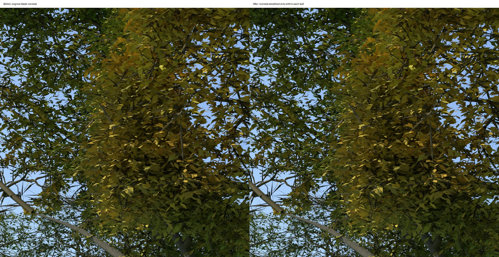
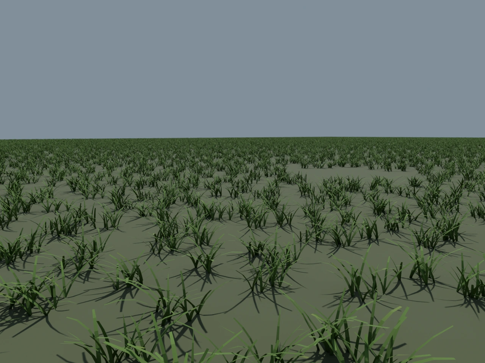
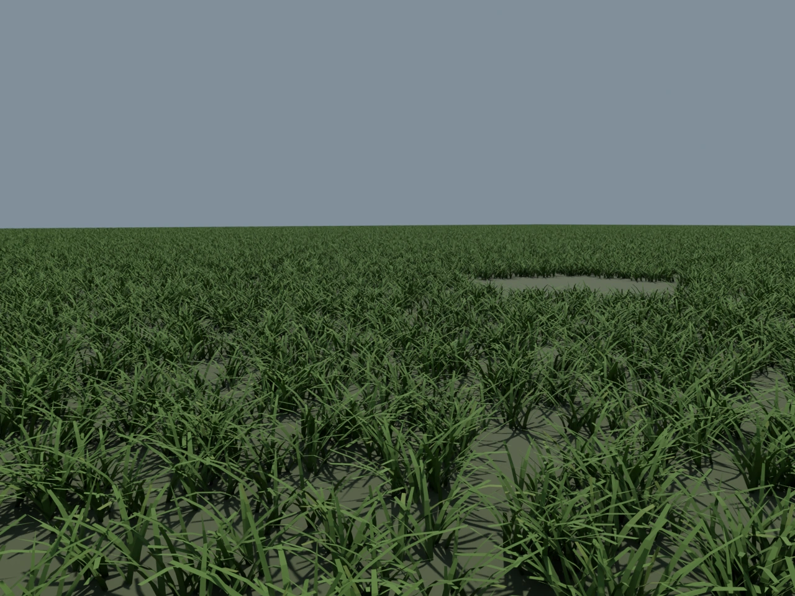

R7.1：叶面、草叶与风载修复
这一版处理了三个可定位的问题：叶面被拆成硬折面；持续风速下枝组停止变化；布局实验用平面代替草叶。下面分别列出修改和验证范围。
叶面连续受光
430 个叶网格按共享完整边识别单片叶，平滑叶内法线。没有改变叶片形状、位置、叶柄插点或枝序。
固定草根与弯曲草叶
445,454 个根位布局实验加入短草叶几何、近中远细节及步道排除区。草根不随相机移动，根颈周边按每株模型包络避让。
持续阵风载荷
固定 120 Hz 积分风随位置和时间改变枝条载荷，通过刚度、惯性和阻尼求响应。卸载后回位，固定根部和枝条插点。
验证结果
- 前端与几何发布测试 66 项通过；基础设施测试 88 项通过。
- 最终草地和风场定向复测通过；替换后的实拍模型 3 项测试通过。
- 独立解码比较证明：原二进制前缀、位置、索引、UV、颜色、材质与节点变换全部保留；只有叶片法线引用变化。
- 4,567,494 个叶顶点接受独立法线检查。孤立或异常连接组件保留原值。
新模型 SHA-256：23b49752dc7c21d9197368253588b1efb38f7db4cc5a8c9f94c52821c0e94dc5。旧 R7 Blender 工程包仍是基线，当前修改单独提供为可复现代码补丁。
离线画面复核
8 张 RTX 5090 已完成实际交付 GLB 的同机位前后渲染。全景下变化较小；叶面法线修复没有解决树冠轮廓、重复枝序或草地色差。此处为离线渲染，尚未完成浏览器画面验收。
查看实际叶片近景前后对照

近景渲染回执草地补密度：保留原根位
原有 111,433 个根位全部保留，追加至 445,454 个。以下为布局实验的同机位、同光照离线渲染；未放入树木，远处圆形空位是保留的种植区。这不是实拍重建的草坪截图。新版中景裸底减少，前景仍有间隙。

补密度前
追加固定根位后助手连接诊断
本轮检查发现心跳链路间歇 TLS 失败和超时；后续由现有重试恢复为在线、5 个可用账号。服务进程存活不代表公网始终可达，没有将这次恢复写成永久修复。
查看带时间戳的健康记录
仍然要修的内容
叶面变得连续，不等于树冠已经正确。远处树冠仍有重复枝序、层状疏密；草地反照率与远近覆盖还未达到实拍一致。生长历史、地下根形和风载参数尚未有校园实测校准。
本次新增草叶几何用于“布局实验”。“实拍重建”的草坪使用既有固定草根资产，未把两个场景的改动混为一谈。实拍模型仍是静态几何加弹性响应，不能据此宣称已经重建完整生物生长过程。